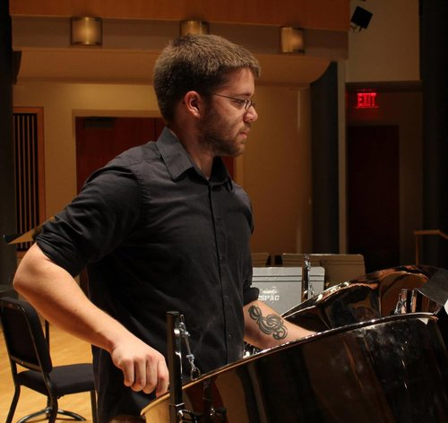

Hi. My name is Duncan Boatright and I make noise.
I am a composer, educator, and instructional technologist living in Maryland, currently finishing my Doctorate of Musical Arts from the University of Maryland-College Park. In the past I've written for everything from string quartet to percussion ensemble to solo Game Boy, and I've collaborated with ensembles and artistic groups including StageFree, the Kronos Quartet, the Vaahi Art Collective, and yMusic. My recent works focus on procedurally generated and interactive electronic media utilizing SuperCollider and a number of other tools.
I am a passionate pedagogue and I have served as a music educator at both the public school and university levels. I am currently an adjunct music faculty member at the University of Maryland-Baltimore County, and I've previously lectured at the University of Maryland-College Park.
stories heard, but not recalled
Fixed media, 2019. Written primarily using SuperCollider with assist from Pro Tools.
were you niamh
Timpani and fixed media, 2014. Written primarily using Logic Pro X for Dr. Diana Loomer, professor of percussion at Appalachian State University and West Carolina University as part of the Melodic Timpani Project, which you can read more about here.
Availability Heuristic
Sextet for flute, clarinet, trumpet, horn, viola, violoncello. Written for yMusic as part of their residency at the University of Maryland in 2018-2019, and performed by yMusic at the University of Maryland.
Retrospective: VI
Septet for flute/piccolo, clarinet (Bb, Eb, and bass), trumpet, trombone, violin, piano.
I Walk the Labyrinth
For solo vibraphone, in four movements.
Connexus
Marimba duet, in four movements.
As I Ponder'd
For vibraphone and alto.
EDUCATION
Doctor of Musical Arts in Composition, 2017 – 2020.
University of Maryland, College Park
Master of Music in Composition, 2012-2015
University of Maryland, College Park
Bachelor of Music in Theory & Composition, 2008-2012
Appalachian State University
COLLEGE TEACHING
MUSC427: Electronic Music
University of Maryland, Baltimore County
· Fall 2018 (1 section)
· Fall 2019 (1 sections)
Course for undergraduate composition majors covering the composition, theory, and history of electronic and electroacoustic music throughout the 20th century and beyond. In addition to providing an overview of landmark works and the development of various compositional techniques, the course provided instruction in Reason, ProTools, Audacity, Max/MSP, and SuperCollider.
MUSC140: Music Fundamentals I
University of Maryland, College Park
· Fall 2018 (2 sections)
· Spring 2019 (2 sections)
Course for undergraduate non-music majors, covering basic music theory and providing an overview of masterworks from the 17th-20th centuries. Students followed Straus’ Elements of Music and progressed from having no background in music theory to being able to undertake basic 4-part voice leading composition exercises. Course included three original composition projects.
OTHER TEACHING
2015-2017: Music Teacher, Chatham County Public Schools
2013: Graduate Teaching Assistant, University of Maryland, College Park
MUSC665: The Power of Musical Performance in Social Engagement, Spring 2013
2010-2012: Undergraduate Teaching Assistant, Appalachian State University
MUS 2001 Music Theory III, Fall 2010
MUS 2007 Aural Skills III, Fall 2010
MUS 3661 Electronic Music, Spring 2012
2008-2016: Marching Percussion Technical Instructor, Various
Chatham Central High School, Bear Creek, NC: Principal technique instructor and assistant show designer
Century Highschool, Sykesville, MD: Principal battery instructor and music designer
Myers Park High School, Charlotte, NC
2008-present: Private music theory instructor
Private music theory instruction of between 3 and 12 students weekly, in coordination with the Boatright School of Irish Music.
TECHNOLOGY BACKGROUND
Extensive professional background in various technical fields, including:
· Experience as a composer working with: Reason, ProTools, Logic Pro, Reaper, SuperCollider, and Max/MSP
· Hobbyist level experience in programming languages including Python and Java
· 4 years of experience in Learning Technologies, working with students and faculty to develop and implement technologies for blended classrooms, flipped classrooms, and distance learning
· 5 years of experience as a web administrator and consultant for a mid-size public relations firm in Charlotte, NC (Windward Global)
SELECTED WORKS
Availability Heuristic for flute, clarinet, trumpet, violin, viola, violoncello. March 2019.
Performed in April 2019 by yMusic at the University of Maryland.
Stories heard, but not recalled, electronic media. February 2019.
Premiered at Studio Gallery in Washington, D.C., February 22nd 2019 by StageFree.
her still singing limbs for flute trio. December 2018.
Alecta for orchestra. May 2018.
Performed in May 2018 by the University of Maryland Symphony Orchestra.
inverse half-life for three percussionists and SuperCollider. March 2018.
Pending performance in Spring 2019 at the University of Maryland.
Near Death Experience, SuperCollider accompaniment for stage work. November 2017.
Generative electronic accompaniment for Near Death Experience, original stage work by Nikoo Mamdoohi and the Vaahi Art Collective. Premiered November 8th-12th 2017 at the Charm City Fringe Festival in Baltimore, MD.
Iranian Folksong Arrangements for violin and viola. Fall 2017.
Premiered October 19th 2017 at the Hill Center in Washington, DC. Ava Shadmani, violin, and Kimia Hesabi, viola.
Lettie is Given to the Ocean for baritone voice, viola, ‘cello, and SuperCollider. September 2017.
Written for the NextNOW festival at the Clarice Smith Performing Arts Center. Premiered September 2017. Aaron Peisner, baritone; Becca Barnett, viola; Katie McCarthy, ‘cello.
Were You Niamh for timpani and electronic tape. December 2015.
Commissioned by Diana Loomer, percussion instructor at the University of Texas at Austin.
Premiered February 2017 at the University of Texas at Austin. Diana Loomer, timpani.
The Skies Above, the Seas Below for marching indoor percussion ensemble. December 2014.
Commissioned by Century High School. Premiered throughout the Winter 2015 KIDA season by the Century High School marching percussion ensemble.
Icarus for bassoon quartet. October 2014.
Commissioned by Ronn Hall, associate principal bassoon, Hawaii Symphony Orchestra.
Per Aspera ad Astra for string quartet. January 2014.
Written for the Kronos String Quartet in coordination with the quartet’s annual residence at UMD-CP.
Performed in February 2014 at the University of Maryland by the Kronos String Quartet.
The Longest Year for vibraphone. April 2013.
Premiered April 2013 at the University of Maryland. Robbie Bowen, vibraphone.
Performed 2018 by Jon McGovern, vibraphone.
STS-135 Atlantis for double second steel drums and ‘cello. August 2011.
Premiered December 2012 at the University of Maryland. Duncan Boatright, steel drums.
discontent for violin and electronic tape. November 2010.
Premiered November 2010 at Appalachian State University. Michelle Flanagan, violin.
As I Ponder’d for alto and vibraphone. February 2010.
Premiered March 2012 at Appalachian State University. Lana Card, alto; Mitch Greco, vibraphone.
Musica Instrumentalis for string quartet. October 2009.
Premiered November 2009 at Appalachian State University. Appalachian State University undergraduate string quartet.
beagle for wind quartet, string quartet, and 2 vibraphones. January 2009.
Premiered February 2009 at Appalachian State University.
2nd place winner of the ASU Charles Darwin Bicentennial Composition Competition.
RESEARCH
· In progress: Research in progress for presentation at 2019-2020 conferences; score study of Roger Reynolds, …the serpent-snapping eye, including study of composer’s manuscripts and reference notes accessed at his archives in the Library of Congress. Research focuses on the mathematical underpinnings that formulate the work’s structure, form, and sonic events.
· Presented at National Council on Undergraduate Research in 2012: Research in the usage of the tenor steel pan as an aid for music theory instruction in cultural settings that do not readily provide keyboard instruments.
MEDIA APPEARANCES
StageFree Podcast, Episode 8 – Concert 2.4, Bytes and Brushes. February 2019.
Young Musician’s Podcast, Season 2, Episode 3: This Podcast is a Graphic Score. October 2018.
https://soundcloud.com/user-38178210-287367122/s2-ep-3-this-podcast-is-a-graphic-score
“Dom talks about SuperCollider with Duncan Boatright.”
Review: ‘NDE’ at Charm City Fringe Festival. November 2017.
“This is a powerful[ly] devised play which speaks to the nature of life and how we handle our own mortality. […] At times the scenes evoke wonder, sadness, confusion, and a host of other emotions which we all experience at one point or another.”
Undergraduate Research in Music: A Guide for Students, Young, Gregory and Jenny Shanahan. August 2017.
“Using an alternative instrument as a means of music theory instruction could benefit students in these areas in incredible ways.” Reprinted accepted abstract from NCUR presentation.
A Weekend of Music, IrishPhiladelphia.com. August 2013.
Appalachian Today, July 2012.
https://music.appstate.edu/news/appalachian-today-duncan-boatright-music
“A percussion student, Boatright researched whether music theory could be taught just as well using the steel drum as it can with the most predominant instrument used in music theory instruction, the piano.”
INSTRUCTORS
Primary Instructors
Dr. Thomas DeLio; composition and electroacoustic music
Dr. Lawrence Moss; composition
Dr. Jennifer Snodgrass; music theory pedagogy
Dr. Scott Meister; composition and electroacoustic music
Secondary Instructors
Dr. Mark Wilson; composition and orchestration
Dr. David Froom; composition
Dr. Robert Falvo; percussion
Master Classes
David Maslanka
Brian Balmages